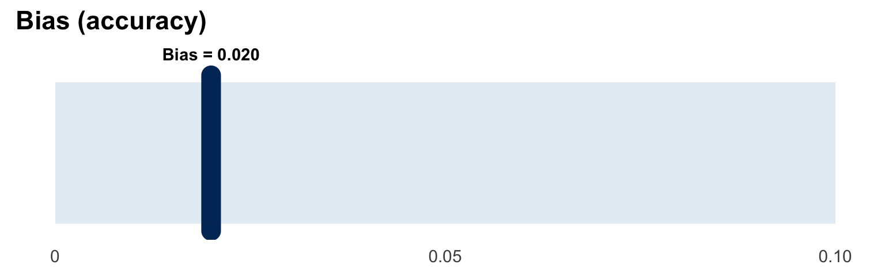
Design and report simulation studies the smart way with ADEMP
Aim & Objectives
Aim & Objectives
Aim
Equip you to design, run, and report transparent simulation studies using ADEMP
By the end, you will:
- Explain each ADEMP component
- Specify realistic data mechanisms
- Build power simulations in R
- Report with Monte Carlo SEs
- Avoid common pitfalls
This seminar takes a hands-on approach to simulation studies in biostatistics. By the end, you won’t just understand the theory—you’ll have the practical skills to design and implement your own simulations. The ADEMP framework gives us a structured workflow that prevents common mistakes and ensures our simulations actually answer the questions we care about.
But what is a simulation study?
Simulation study = a virtual experiment on data
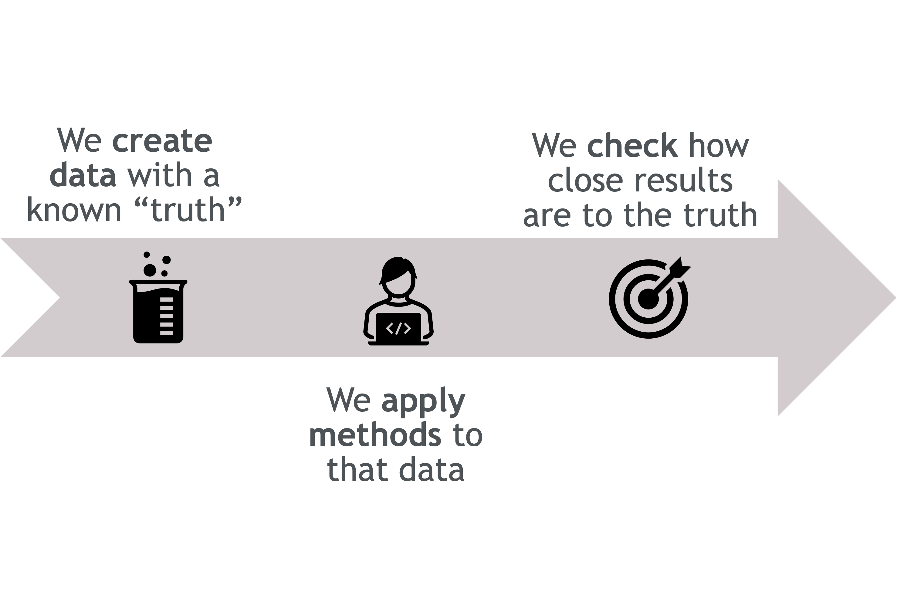
A simulation study is essentially a controlled experiment where we know the truth from the start. Think of it as three key steps:
- We create data where we control the parameters—we set the true effect size, sample size, variability, etc.
- We apply methods to that data—the same statistical methods we’d use in practice (regression, tests, estimation techniques).
- We evaluate performance** by comparing results against the known truth—measuring bias, coverage, power, and other metrics.
This gives us complete transparency: we can see exactly when methods work well, when they start to break down, and under what conditions they fail entirely.
Why simulate?
Why simulate?
- When formulas fail, simulate
- Real data are messy (missingness, nonlinearity, clustering)
- Assumptions break in practice
- We need to test “what if” scenarios safely
- Simulations reveal if methods are robust, unbiased, and reliable
We simulate to “rehearse” real-world messiness. It’s a safe sandbox to see if a method holds up with missing data, small samples, or nonlinearity—before we bet a study’s conclusions on it.
Enter ADEMP!
ADEMP Overview
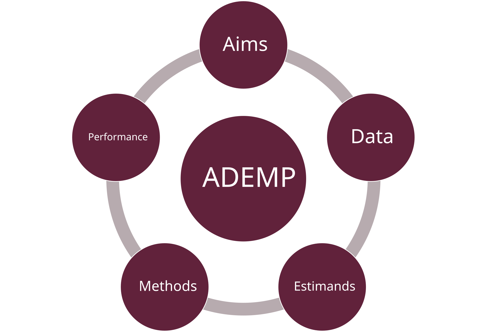
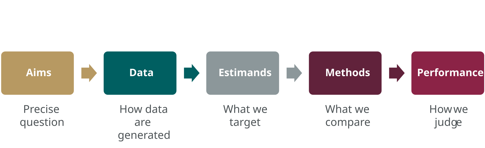
- Start with Aims;
- Design the Data-generating mechanisms;
- Estimands are determined by the DGM.
- Select Methods to estimate those Estimands;
- Evaluate with Performance measures chosen to serve the Aims.
ADEMP is a simple order of operations. Each step builds on the previous. Aims drive everything - they determine what data to generate and what to estimate. Methods must actually answer your estimand, and performance measures must align with your aims.
Aims
A : Aims
The aims define what the simulation study seeks to learn about a method’s statistical properties.
. . .
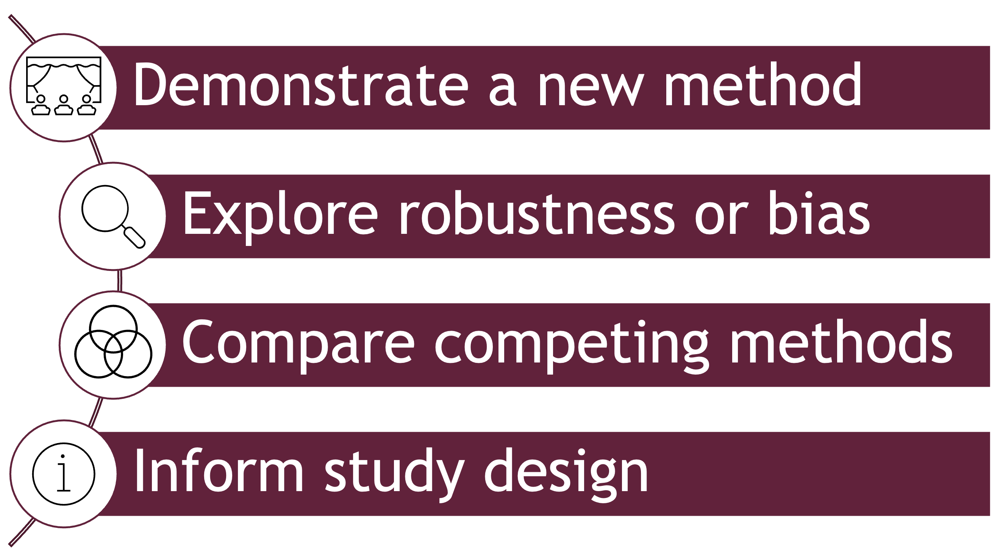
The Aim sets the compass. Are we stress-testing methods under realistic conditions, or just showing proof of concept? Clear aims avoid a common mistake: running simulations first and deciding later what they were for.
A : Aims
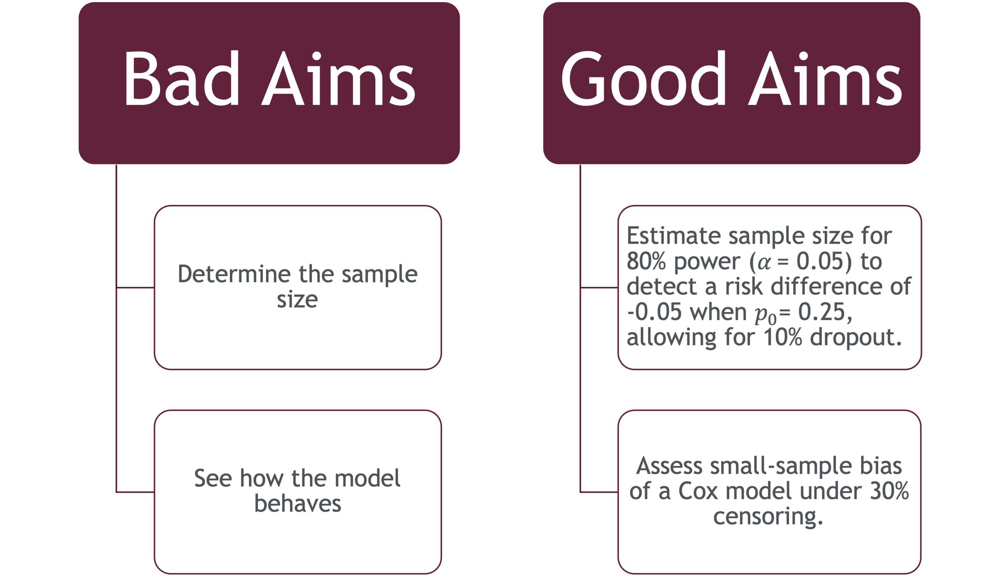
Notice how the aims on the right are specific and testable. They ask focused statements about method performance under defined conditions. Good aims aren’t just “compare Method A and B”; they specify what aspect matters (bias? power? coverage?) and under what realistic scenarios. This specificity guides every downstream decision in the ADEMP workflow.
Data-generating Mechanisms
D : Data-generating Mechanisms
The DGM is your virtual factory. It takes in certain parameters of interest as components and builds them into the outcome you wish to simulate
It’s where you decide what world your methods will live in — how realistic, how messy, how extreme they are. The more thoughtful your DGM, the more meaningful your conclusions.
If I want to test survival models, my DGM might simulate event times from a log-logistic distribution with right-censoring. I can vary the sample size or censoring rate to see how the method performs across contexts.
Parametric DGMs give you control and flexibility—you can systematically vary sample sizes, effect sizes, and distributions to stress-test methods across many scenarios. Resampling from real data keeps you grounded in reality but limits generalizability to that one observed dataset. In practice, many simulation studies use parametric DGMs informed by pilot data or literature estimates to balance realism and breadth.
. . .
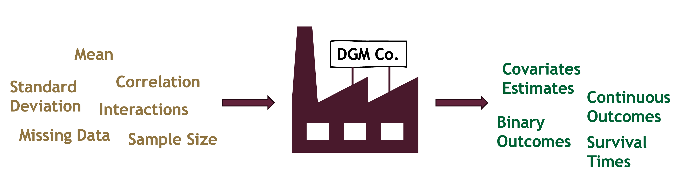
. . .
- Choose realism over simplicity
- Parametric (known model) or resampling (real data)
- Vary key factors (sample size, effect size, noise level)
. . .
Note
In planning a simulation study, it is usual to spend more time deciding on data-generating mechanisms than any other element of ADEMP.
Estimands
E: Estimands
The estimand is the target—the true parameter you care about. The estimator is the tool you use to hit that target. This distinction matters enormously in simulations because we know the true estimand by design, so we can directly measure how well each estimator performs. Confusing these leads to unfair comparisons, like testing whether a regression coefficient and an odds ratio are “the same”—they’re answering different questions.
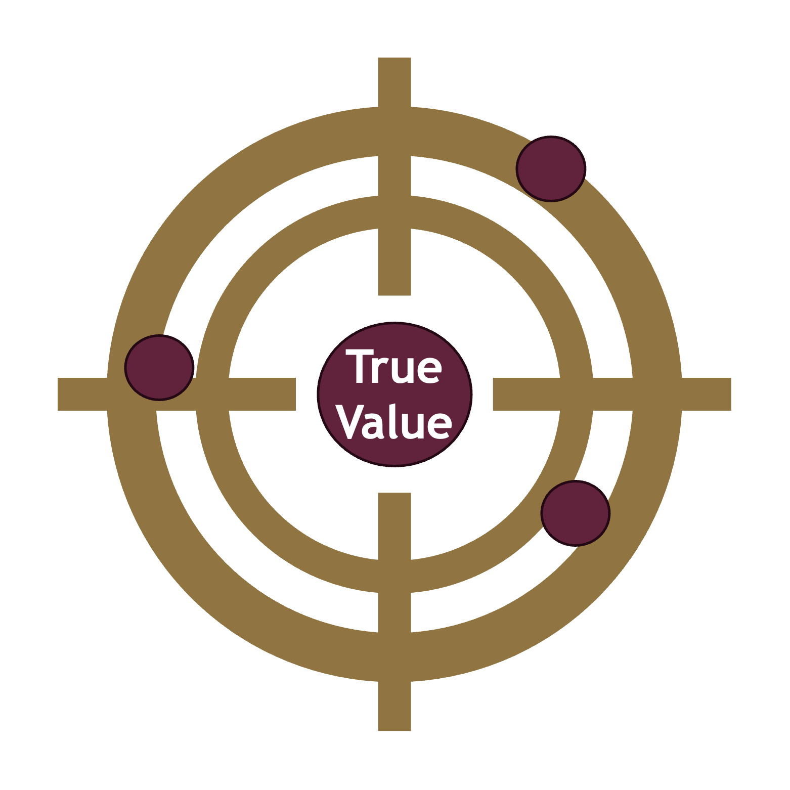
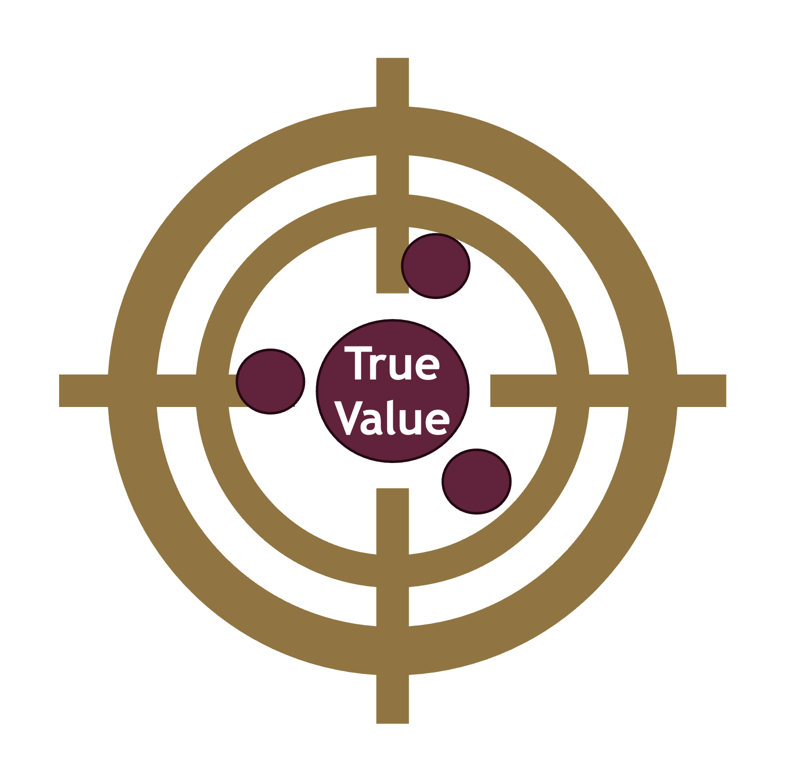
The majority of simulations compare on specific quantities like means, \(\beta\) coefficients, odds ratios. Occasionally some other quantities are compared such as covariate adjusted vs unadjusted effects.
The goal is often to get estimates as close to the true value as possible (low bias).
\[\begin{equation*} \text{Bias} = \mathbb{E}\left(\hat{\theta}\right) - \theta \end{equation*}\]
Sometimes the estimand is actually more of a target like measures of predictive accuracy, sample size
. . .
Remember
Estimand ≠ Estimator
The estimand is what you want to estimate (\(\theta\)); the estimator is how you estimate it (\(\hat{\theta}\)).
Methods
M : Methods
- Define and justify each method
- Ensure comparability (same estimand)
- Report convergence issues, assumptions
The Methods are your competitors in a boxing ring. Just as in boxing where opponents are matched by weight and skill, methods ensure everyone estimates the same target.
If your methods are designed for different estimands, the comparison is unfair — like judging a fish and a bird on who climbs a tree faster.
M : Methods - Fair Comparison
| Criteria | Method A | Method B |
|---|---|---|
| Same estimand | ✓ | ✓ |
| Same data generation | ✓ | ✓ |
| Optimal tuning parameters | ✓ | ✓ |
| Same sample sizes | ✓ | ✓ |
| Same evaluation metrics | ✓ | ✓ |
Neutral comparisons require symmetry. Common pitfalls are comparing two seemingly related estimands like marginal vs conditional effects when these are actually two different estimands.
Performance
P: Performance
What we report
| Measure | Meaning |
|---|---|
| Bias | Accuracy (closeness to truth) |
| SE / MSE | Precision / total deviation |
| Coverage | Interval reliability |
| Type I / Power | Test validity |
| MCSE | Simulation uncertainty |
. . .
Remember!
Even simulations have uncertainty — that’s what MCSE quantifies.
These five performance measures are some of the key tools for evaluating methods.
Bias tells us about systematic error, MSE combines bias and variance into overall accuracy, coverage checks if confidence intervals are honest, power and Type I error assess testing procedures, and MCSE reminds us that even our simulation results have sampling variability. Always report MCSE alongside your estimates—it’s the measure of how much your simulation results would change if you re-ran it with a different random seed.
P: Performance
Tip
Bias measures systematic error: the average difference between your estimator and the true value (\(\theta\)). Small absolute bias is better.
P: Performance
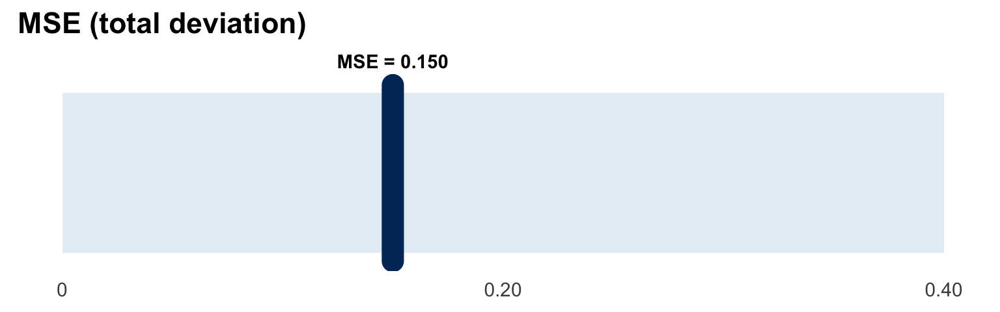
Tip
Mean Squared Error (MSE) combines variance and bias: \(\mathrm{MSE}(\hat{\theta}) = \mathrm{Var}(\hat{\theta}) + \mathrm{Bias}(\hat{\theta})^2\). Lower MSE means estimates concentrate near truth.
P: Performance
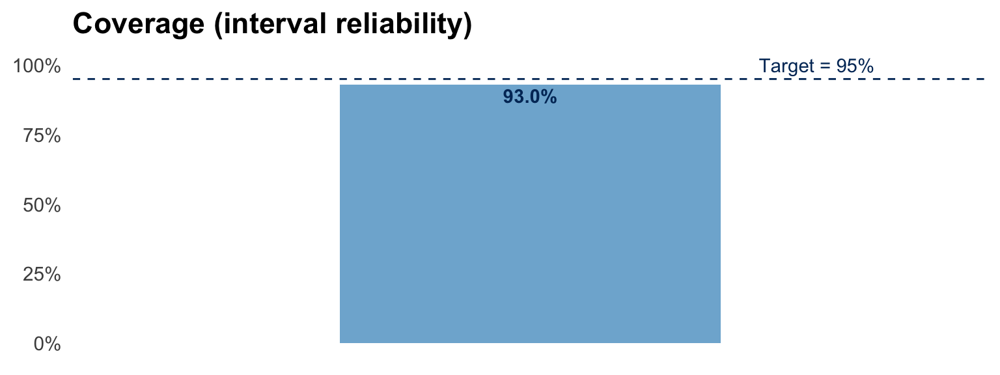
Tip
Coverage checks if \(100(1-\alpha)\%\) confidence intervals contain the true value at the advertised rate. If coverage is low, intervals are too narrow or biased.
P: Performance — Monte Carlo SE
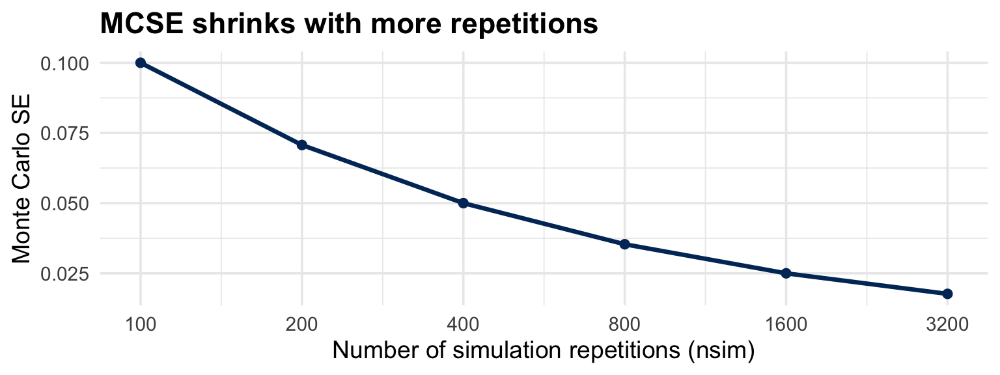
Tip
Monte Carlo Standard Error (MCSE) quantifies simulation uncertainty.
Worked example: sample size by simulation
This worked example demonstrates how to apply ADEMP to a practical question that biostatisticians face regularly: determining sample size for a clinical trial. We’ll compare the traditional formula-based approach with simulation-based power analysis, showing how simulation can capture complexities like dropout and analysis choices that formulas often handle crudely or ignore entirely.
. . .
Question:
How many participants per arm do we need to detect an absolute improvement from 30% to 45% with 80% power, two-sided α = 0.05, allowing for 10% dropout?
. . .
Design choices:
- Control proportion \(p_0 = 0.30\), Treatment proportion \(p_1 = 0.45\) (risk difference = 0.15)
- Equal allocation, independent Bernoulli outcomes
- Dropout 10% (MCAR), analysed as complete cases
This worked example demonstrates how to apply ADEMP to a practical question that biostatisticians face regularly: determining sample size for a clinical trial. We’ll compare the traditional formula-based approach with simulation-based power analysis, showing how simulation can capture complexities like dropout and analysis choices that formulas often handle crudely or ignore entirely.
Formula method
Formula-based sample size calculations are fast and convenient, but they rest on large-sample approximations that can break down exactly when we need them most—in small samples or at extreme proportions. The dropout adjustment here is just a crude inflation factor; it doesn’t model dropout as an actual stochastic process. Most importantly, the formula assumes a particular test statistic and doesn’t let us explore alternatives like exact tests or different handling of missing data. Simulation removes these limitations.
. . .
Closed-form (normal approximation) per arm: \[ n = \frac{\big[z_{1-\alpha/2}\sqrt{2\bar p(1-\bar p)} + z_{1-\beta}\sqrt{p_0(1-p_0)+p_1(1-p_1)}\big]^2}{(p_1-p_0)^2},\quad \bar p = (p_0+p_1)/2. \]
. . .
| Calculate n per arm | Required n before dropout | Final n |
|---|---|---|
| 162.3344 | 163 | 180 |
. . .
Drawbacks:
- Large-sample approximation; can misbehave for small \(n\) or extreme proportions.
- Dropout handled crudely by inflation, not as a data-generating process.
- Ignores analysis choices (Wald vs score vs exact; missingness handling).
- Produces one number without quantifying uncertainty in assumptions.
ADEMP plan (what we simulate)
. . .
| Element | Plan |
|---|---|
| A — Aims | Find the smallest enrolled \(n\) per arm achieving \(\geq 80\%\) power (two-sided \(\alpha=0.05\)). Check that Type I error ≈5%. |
| D — DGM | Two-arm trial, equal allocation. Outcomes \(Y\sim\mathrm{Bernoulli}(p_a)\) with \(p_0=0.30\), \(p_1=0.45\). Dropout 10% MCAR: each subject observed with prob. 0.90. |
| E — Estimand | Risk difference \(p_1 - p_0\). Hypothesis test \(H_0: p_1=p_0\). |
| M — Methods | Primary analysis: prop.test (score test, with continuity correction). Missing outcomes: complete cases. |
| P — Performance | Power under \((p_0,p_1)=(0.30,0.45)\), MCSE for power \(\sqrt{\hat{p} \left(1- \hat{p} \right)/n_{sim}}\) |
This table shows ADEMP in action. Notice how each element connects: the Aim defines what we’re looking for (minimum sample size for 80% power), the DGM specifies realistic data generation including dropout as a binomial process, the Estimand and Methods are aligned (both target the risk difference using prop.test), and Performance measures directly address the Aim. This upfront planning prevents scope creep and ensures every simulation run serves a clear purpose.
Let’s Code!
. . .
Simulation function
#Parameters
n_enrolled <- 60
p0 <- 0.30
p1 <- 0.45
dropout <- 0.1
alpha <- 0.05
simulate_one_trial <- function(n_enrolled, p0, p1, dropout, alpha) {
# Apply dropout to get observed sample sizes
n0_obs <- rbinom(1, n_enrolled, 1 - dropout)
n1_obs <- rbinom(1, n_enrolled, 1 - dropout)
# Skip if either group is empty
if (n0_obs == 0 || n1_obs == 0) return(NA)
# Generate outcomes
y0 <- rbinom(1, n0_obs, p0)
y1 <- rbinom(1, n1_obs, p1)
# Test for difference in proportions
test <- prop.test(x = c(y1, y0), n = c(n1_obs, n0_obs))
# Return TRUE if we reject H0
test$p.value < alpha
}
# Run simulation for a given sample size
simulate_power <- function(n_enrolled, p0, p1, dropout,
nsim = 2000, alpha) {
# Simulate nsim trials
results <- map_lgl(1:nsim, ~ simulate_one_trial(n_enrolled, p0, p1, dropout, alpha))
# Calculate power and MCSE
power_hat <- mean(results, na.rm = TRUE)
mcse <- sqrt(power_hat * (1 - power_hat) / sum(!is.na(results)))
tibble(power = power_hat, mcse = mcse)
}What the code does
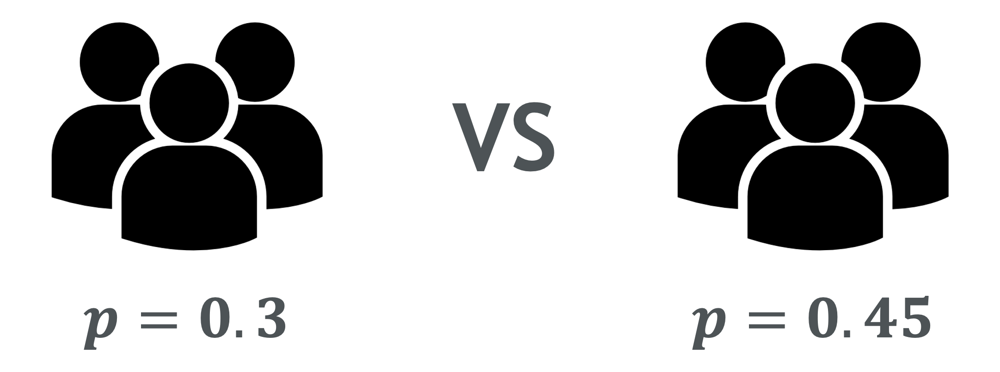
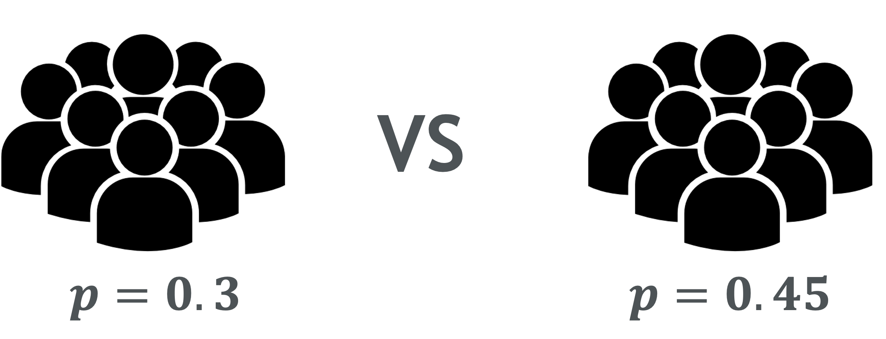
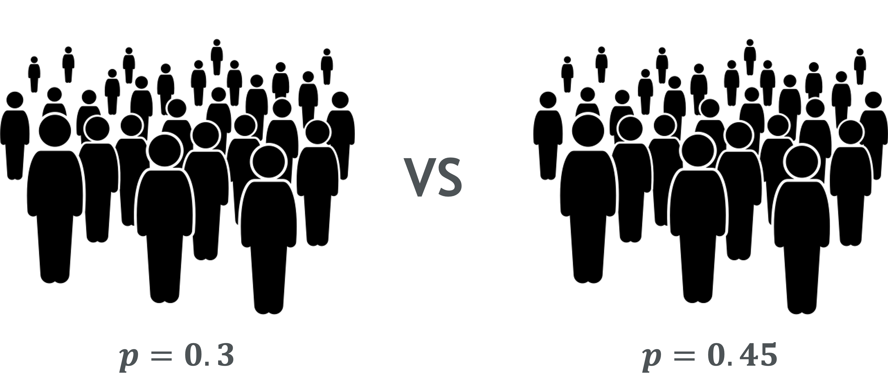
Search for the smallest enrolled \(n\) hitting ≥80% power
Exploration
Search for the smallest enrolled \(n\) hitting ≥80% power
Narrowed Down
Power curve (simulation vs formula)
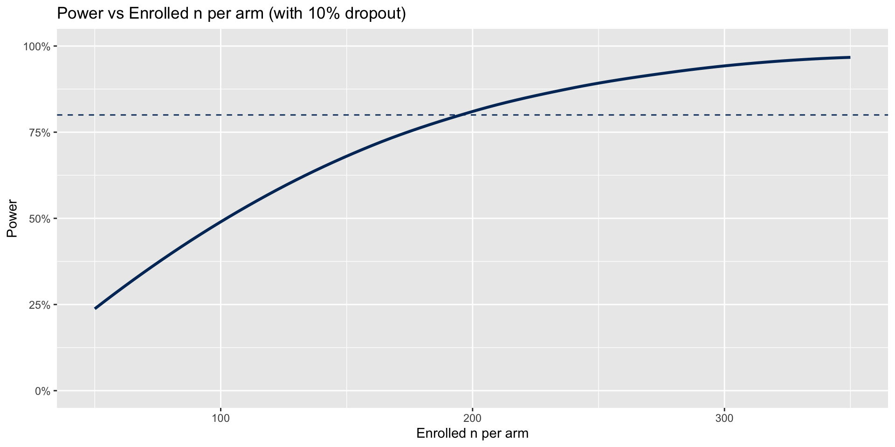
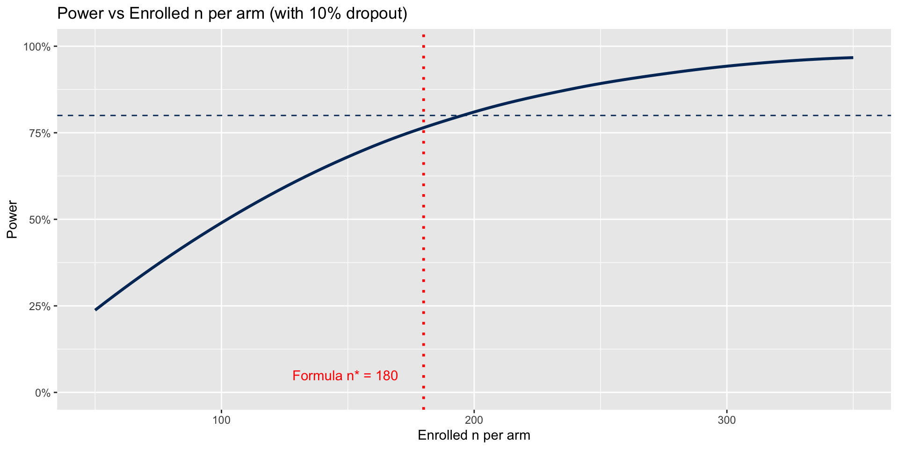
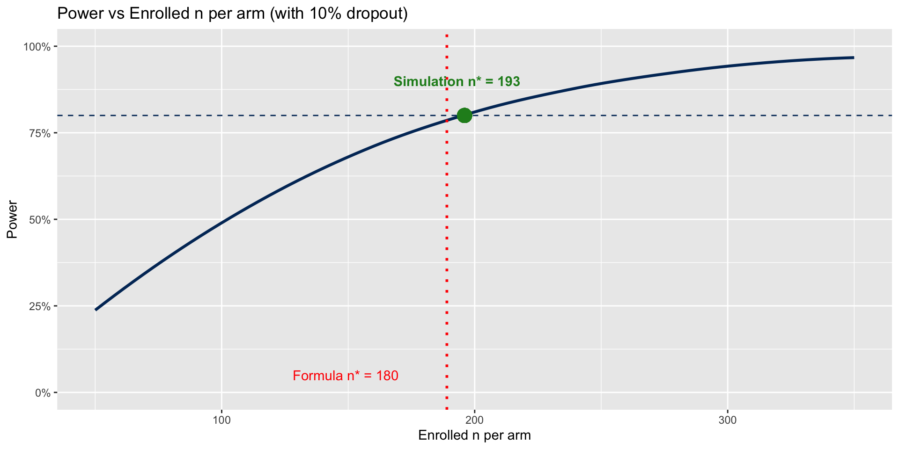
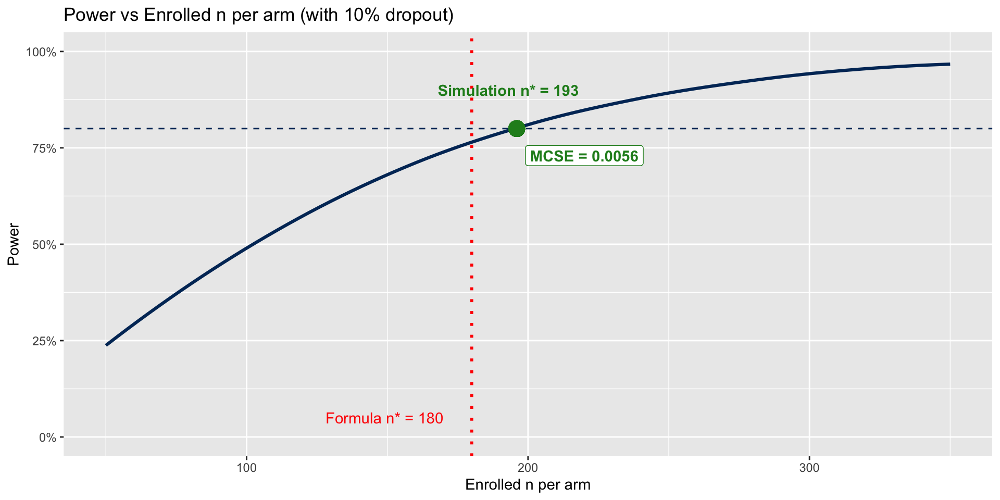
. . .
Note
Formula would have resulted in 13 fewer participants per arm (180 vs 193) than the simulation-based approach, potentially underpowering the study.
This divergence between formula and simulation isn’t trivial—14 fewer participants per arm translates to 28 fewer across both arms, a substantial difference in study cost and logistics. The formula underestimates because it handles dropout crudely and relies on large-sample approximations. The simulation explicitly models dropout as a binomial process and uses the actual test statistic we’ll apply. The small MCSE of 0.0056 tells us our simulation-based answer is stable and trustworthy.
CI coverage: Wald vs Wilson (one proportion)
set.seed(20251017)
nsim <- 2000 # number of repetitions
n <- 25 # sample size
p <- 0.05 # true proportion
alpha <- 0.05 # nominal level
wald_cover <- logical(nsim)
wilson_cover <- logical(nsim)
for (i in seq_len(nsim)) {
x <- rbinom(1, n, p) # data
phat <- x / n
# Wald (normal approx) CI
z <- qnorm(1 - alpha/2)
se <- sqrt(phat * (1 - phat) / n)
wald <- c(phat - z * se, phat + z * se)
# Wilson (score) CI (no continuity correction)
pr <- prop.test(x, n, correct = FALSE, conf.level = 1 - alpha)
wilson <- pr$conf.int
# Does each CI contain the truth?
wald_cover[i] <- (wald[1] <= p && p <= wald[2])
wilson_cover[i] <- (wilson[1] <= p && p <= wilson[2])
}
# Empirical coverage by method
coverage <- data.frame(
method = c("Wald", "Wilson (score)"),
cover = c(mean(wald_cover), mean(wilson_cover))
)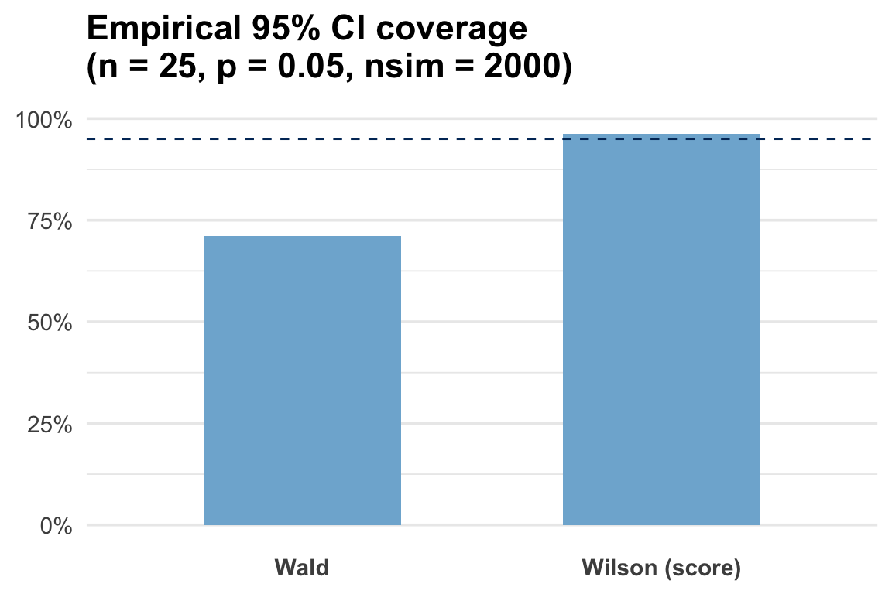
Conclusion
In small samples with low prevalence of the outcome, the Wald CI can undercover (<95%), while the Wilson (score) CI is typically much closer to nominal.
This example illustrates a classic problem with normal approximation methods: they fail when sample sizes are small or proportions are extreme. The Wald interval severely undercovers because its variance estimate becomes unstable with low event counts. The Wilson (score) interval inverts the test statistic and performs much better. Simulations like this reveal when textbook methods break down and guide us toward more robust alternatives for real applications.
Pitfalls to Avoid
These pitfalls are unfortunately common in the published literature. Selective scenario reporting makes methods look better than they are. Seed shopping is a form of p-hacking for simulations—running multiple seeds and reporting the best one. Unfair tuning means extensively optimizing your new method while leaving competitors at default settings. Hidden failures occur when non-converged or errored runs are silently dropped rather than reported. And skipping MCSEs leaves readers unable to judge whether differences between methods are real or just simulation noise.
. . .
Don’t Do This
- Selective scenarios: Cherry-pick favorable cases
- Seed shopping: Try seeds until results look good
- Unfair tuning: Optimize one method only
- Hidden failures: Ignore non-convergence
- No MCSEs: Report point estimates only
Pitfalls to Avoid
The antidotes to these pitfalls are straightforward: transparency and fairness. Pre-specify your scenarios before running simulations—treat it like a study protocol. Fix your random seeds and document them so others can reproduce your exact results. Give all methods equal tuning effort. Report convergence failures and sensitivity to them. And always include Monte Carlo standard errors so readers can distinguish signal from noise. Following these practices makes your simulation study credible and reproducible.
Don’t Do This
- Selective scenarios: Cherry-pick favorable cases
- Seed shopping: Try seeds until results look good
- Unfair tuning: Optimize one method only
- Hidden failures: Ignore non-convergence
- No MCSEs: Report point estimates only
Do This Instead
- Pre-specify: Register scenarios upfront
- Fix seeds: Document and share all seeds
- Equal treatment: Same tuning for all
- Report everything: Include failure rates
- Always MCSEs: Quantify simulation uncertainty
Takeaways
Let me leave you with this: ADEMP isn’t just an acronym—it’s a philosophy for rigorous simulation research. Each element plays a distinct role, and they must work together. Start with clear aims, design data generation that reflects reality, specify your target estimand explicitly, choose methods that actually estimate that target, and measure performance in ways that answer your aims. If you follow this structure and avoid the common pitfalls, your simulation studies will be transparent, reproducible, and genuinely informative for biostatistical practice.
- Aims define purpose — keep them focused.
- Data mechanisms define realism — make them plausible.
- Estimands define truth — make them explicit.
- Methods define action — justify every choice.
- Performance defines evidence — quantify uncertainty.
References
Morris, T. P., White, I. R., & Crowther, M. J. (2019). Using simulation studies to evaluate statistical methods. Statistics in Medicine, 38(11), 2074-2102. doi: 10.1002/sim.8086
Burton, A., Altman, D. G., Royston, P., & Holder, R. L. (2006). The design of simulation studies in medical statistics. Statistics in Medicine, 25(24), 4279-4292. doi: 10.1002/sim.2673
Pawel, S., Kook, L., & Reeve, K. (2024). Pitfalls and potentials in simulation studies: Questionable research practices in comparative simulation. Biometrical Journal, 66(1), e2200091. doi: 10.1002/bimj.202200091
Boulesteix, A. L., Groenwold, R. H., Abrahamowicz, M., et al. (2020). Introduction to simulation studies in health research. BMJ Open, 10(12), e039921. doi: 10.1136/bmjopen-2020-039921
Heinze, G., Boulesteix, A. L., Kammer, M., Morris, T. P., & White, I. R. (2024). Phases of methodological research in biostatistics—building the evidence base for new methods. Biometrical Journal, 66(1), e2200222. doi: 10.1002/bimj.202200222